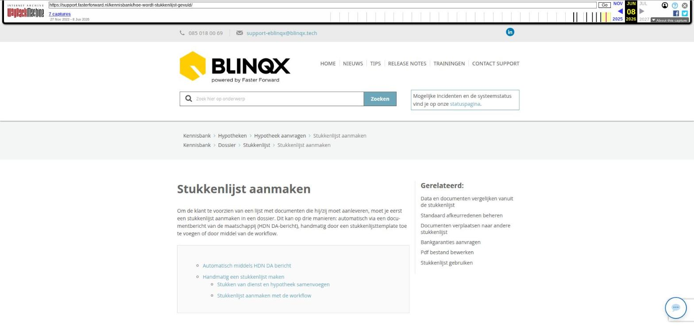

Stukkenlijst aanmaken

Tekstinhoud
Stukkenlijst aanmaken
Om de klant te voorzien van een lijst met documenten die hij/zij moet aanleveren, moet je eerst een stukkenlijst aanmaken in een dossier. Dit kan op drie manieren: automatisch via een documentbericht van de maatschappij (HDN DA-bericht), handmatig door een stukkenlijsttemplate toe te voegen of door middel van de workflow.
Automatisch middels HDN DA bericht
Handmatig een stukkenlijst maken
Stukken van dienst en hypotheek samenvoegen
Stukkenlijst aanmaken met de workflow
Automatisch middels HDN DA bericht
Op het moment dat je van de maatschappij een offertebericht (OX) ontvangt, kunnen zij ook een stukkenlijst meesturen. Dit doen zij met een DA bericht, waarin alle documenten vermeld staan die de maatschappij wilt ontvangen. eBlinqx zet dit automatisch om naar een stukkenlijst onder de betreffende hypotheek in het klantdossier. Hier kan je meer lezen over je stukken vervolgens naar de maatschappij kunt versturen.
Handmatig een stukkenlijst maken
Hiervoor maak je gebruik van vooraf gedefinieerde stukkenlijsten, templates genaamd. Zo kan je voor een starter een andere lijst benodigde documenten opstellen, dan voor een oversluiter of voor 2 personen.
In het klantdossier ga je naar het tabblad "Stukkenlijst", klik hier op het plusteken links bovenin. Je kiest nu de juiste template en onder welk contract de stukken moeten komen te staan.
Als je verder naar beneden scrolt, zie je de volledige lijst met beschikbare documenten. Links zie je de documenten die extra kunt toevoegen aan de stukkenlijst voor dit dossier. Rechts zie je stukkenlijst die bij de template hoort die is geselecteerd.
Aan de rechterkant kun je stukken voor dit dossier verwijderen als deze niet moeten worden aangeleverd. Selecteer hiervoor het stuk en klik rechtsonder op "Verwijder selectie". Als je klaar bent, sla je op met het opslaanicoon linksboven. De stukkenlijst wordt nu aangemaakt.
Stukken van dienst en hypotheek samenvoegen
Is er een stukkenlijst onder de dienst met documenten, dan is het mogelijk om de stukken samen te laten voegen bij het handmatig aanmaken van een stukkenlijst voor de hypotheek. Wanneer je een hypotheek selecteert komt er een veld bij om aan te vinken: Stukken samenvoegen.
Stukkenlijst aanmaken met de workflow
Een derde optie is de vooraf gedefinieerde stukkenlijst (template) te laten aanmaken door de workflow. Vaak wordt vanuit de dienst een stukkenlijst aangemaakt door middel van een stap in workflow. Neem contact met ons op via support-eblinqx@blinqx.tech om dit in te laten inrichten op jouw omgeving.
Laatste update: 15 oktober 2025
Was deze informatie nuttig?
Ja Nee
[Opmerking archivering: dit artikel staat onder twee kennisbankcategorieën: Hypotheken > Hypotheek aanvragen, en Dossier > Stukkenlijst.]